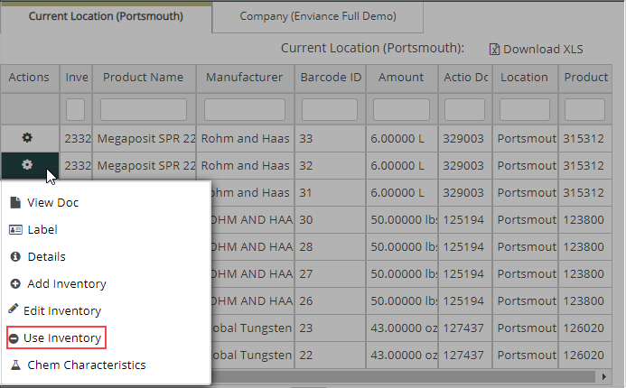
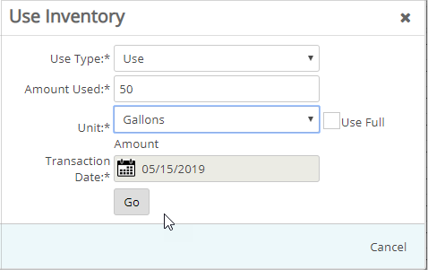

When you use inventory, Regulator adjusts the inventory amounts at the location. You can use the inventory in the following ways:
Use: Normal use of the inventory.
Waste: Some amount of the inventory was wasted.
Dispose: You disposed of an amount of the inventory.
Error Correction: Corrects a mistake made in the inventory.
Transfer: Transfers an amount of inventory to a different location in your company.
Ship To: Transfers an amount of the inventory to one of your customers.
To use inventory:
From the Search Inventory results display, click the icon in the Actions column for a product and select Use Inventory.

sIn the Use Inventory window, enter use details.
Choose a Use Type from the list.
Enter an amount, or check Use Full Amount, and select the unit of measure.

Click Go.
Regulator adjusts the remaining inventory amount according to the amount used.